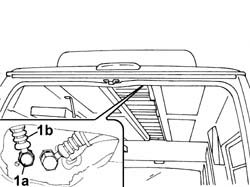

5040A71 PIPING BETWEEN THE EXPANSION VALVE AND THE FITTING PLATE ON THE ROOF PANEL - R.R.
- Path
- Procedures > 50 AUXILIARY UNITS > 5040 AIR CONDITIONING CASING AND COMPONENTS > 5040A CHECKING OPERATION OF AIR CONDITIONER (TEMPERATURE) > 5040A71 PIPING BETWEEN THE EXPANSION VALVE AND THE FITTING PLATE ON THE ROOF PANEL - R.R.
- Kind
- repair procedure (removal / refitting; the operation number is the code)
- Applies to
- all engines; all production periods
- Interactive page
- https://sloeber94.github.io/elrnDB-fDct/en/#/244001277
Applies to: all engines; all production periods; only with equipment: Supplementary air conditioner
 Removing
Removing
 Refitting
Refitting- Position the vehicle on the lift.
- Disconnect the negative battery terminal.
Op. 0010T84 COOLANT FOR AIR CONDITIONING SYSTEM DEHYDRATE AND RECHARGE
Op. 5010B65 EVAPORATOR/CONVEYOR UNIT MIDDLE LINING on the roof panel - R.R.
Op. 5010B61 EVAPORATOR/CONVEYOR UNIT SIDE LINING on the roof panel, left or right (one) - R.R.
Op. 5040C60 AIR CONDITIONING EVAPORATING UNIT - R.R.
1. Undo the connector (1a) and disconnect pipe (1b) from the connector plate.
- Release the piping from its seat and remove.

Applies to: all engines; all production periods; only with equipment: Supplementary air conditioner
Refitting
Removing- Fit the pipe in its seat.
- Tighten the connector securing the pipe to the connector plate.
Op. 5040C60 AIR CONDITIONING EVAPORATING UNIT - R.R.
Op. 5010B61 EVAPORATOR/CONVEYOR UNIT SIDE LINING on the roof panel, left or right (one) - R.R.
Op. 5010B65 EVAPORATOR/CONVEYOR UNIT MIDDLE LINING on the roof panel - R.R.
Op. 0010T84 COOLANT FOR AIR CONDITIONING SYSTEM DEHYDRATE AND RECHARGE
- Connect the negative battery terminal.
- Remove the vehicle from the lift.